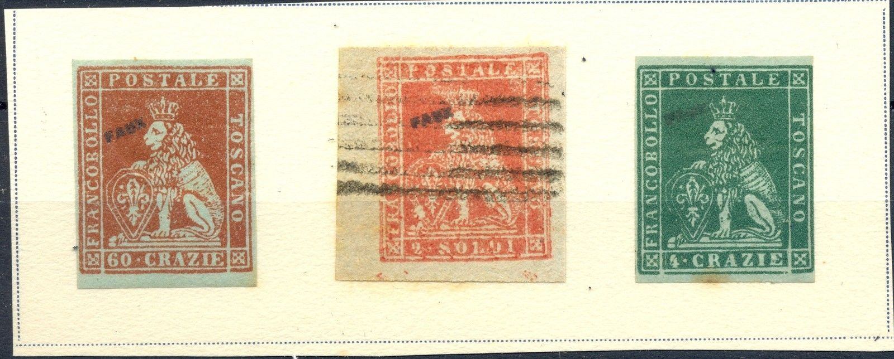
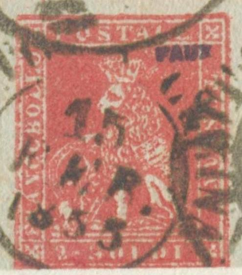
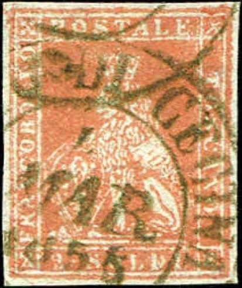
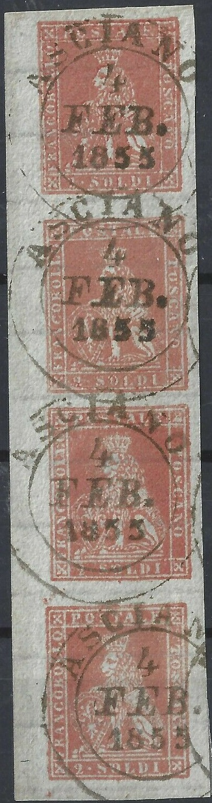

{kind=link}



Toscana - Toscane - Toskana
Return To Catalogue - Tuscany 1851 issue, forgeries, part 1 - Tuscany 1851 issue, forgeries, part 2 - Tuscany 1851 issue, forgeries, part 3 - Tuscany 1851 issue, forgeries, part 4 - Tuscany 1851 issue, Fournier forgeries - Tuscany 1851, Oneglia(?) forgeries - Tuscany 1851 issue - Tuscany 1860 issue and miscellaneous - Italy
Note: on my website many of the
pictures can not be seen! They are of course present in the
catalogue;
contact me if you want to purchase the catalogue.
Tuscany 1851 issue, forgeries, part 1 - Tuscany 1851 issue, forgeries, part 2 - Tuscany 1851 issue, forgeries, part 3 - Tuscany 1851 issue, forgeries, part 4 - Tuscany 1851 issue, Fournier forgeries - Tuscany 1851, Oneglia(?) forgeries

I don't know the distinguishing characteristics of the Fournier forgeries, but I was told that the next forgeries are Fournier forgeries:


With 'FAUX' overprint
Fournier forgery of the 6 c stamp? There is a scratch through the
left part of the '6' in many Fournier forgeries I've seen for
this value.

Fournier forgery of the 60 c value


Two Fournier forgeries, obtained from the forgery site of Bill
Claghorn.

Fournier forgeries?
If anybody has more information on how to distinguish Fournier forgeries from genuine stamps, please contact me!

This Fournier forgery has the forged cancel "S. MINIATO 25
NOV 1855" as can be found in the Fournier Album.



Rather blur forgery of the 2 soldi value with a "FITTO DI
CECINA 15 FEB 1855" cancel. The "2" is slanting
forwards, the bottom line is continuous. There is always a white
blotch on the lower left part of the shield and a scratch in the
outer left frameline (just next to the "A"). More
examples of this type of forgery can be found above in the scans
of the Fournier Albums.



This forgery of the 2 s stamp has a "FAUX" overprint,
it is also a Fournier forgery (or at least Fournier sold it), but
of a different type (constant bottom frame line as well). This
forgery can also be found in "The Fournier Album" of
Ragatz with cancel "ASCIANO 21 SEP 1854" and with a
parallel line cancel.
With watermark and "DIRITTO DI CECINA 16 GEN 1859"
cancel.

The same forgery (part of a block of four), closed bottom
frameline and mouth of lion slighlty open. This forgery is
printed quite blur.


2 s forgery, probably the same forgery as shown above with
"FITTO DI CECINA MAR 1855" cancel
60 c with the same cancel "FITTO DI CECINA 1. MAR
1855". These forgeries seem to have a watermark 'straight
lines'.

A strip of 4 vertically printed forgeries, probably from the same
source. Here with "ASCIANO 4 FEB. 1855" cancel. I've
seen a similar strip with "ASCIANO 10 FEB. 1855"
cancel.
{kind=link}
{kind=link}
{kind=link}